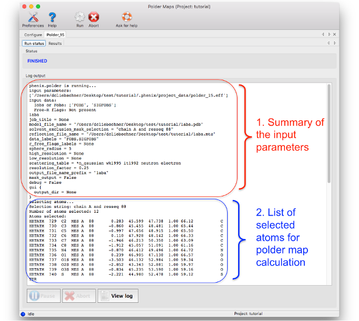
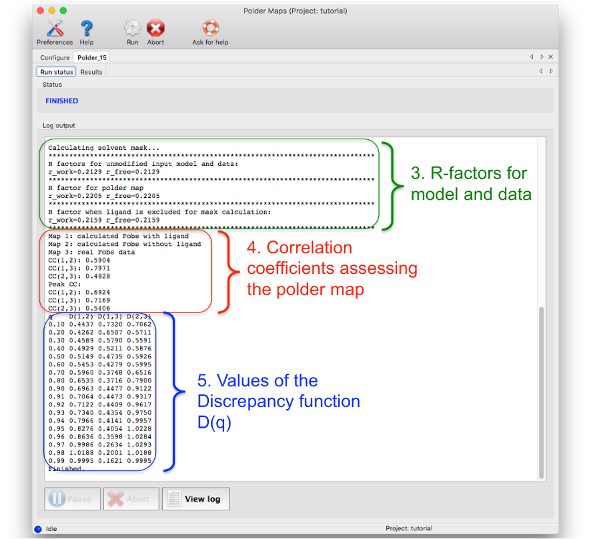
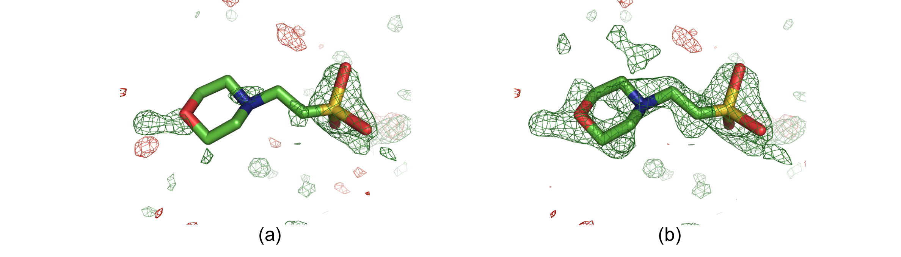
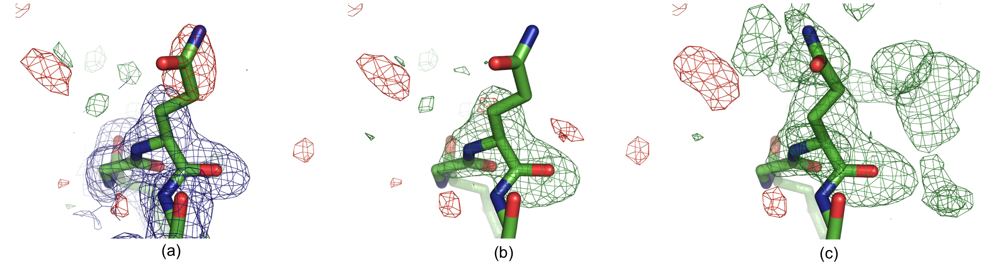

A polder map is an omit map which excludes the bulk solvent around the omitted region. This way, weak densities, which can be obscured by bulk solvent, may become visible. Typical omitted regions are:
- ligands
- residues protruding into solvent area and with unclear side chain orientations (such as lysine, arginine, etc.)
- C- or N-terminal residues
It is not recommended to omit large portions of the model at once (as the excluded bulk solvent volume might become too large) or to omit single atoms. Instead: several residues or one ligand are typical selections for polder maps. It should be kept in mind that phenix.polder does map calculations, no bias-removal strategies (such as refinement, annealing, etc.) are applied.
A presentation file with examples can be found here.
phenix.polder can be executed via the GUI, or the command line:
% phenix.polder model.pdb data.mtz selection='chain B and resseq 3'
This command calculates an omit map of residue 3 in chain B. Common file formats are supported (.pdb and .cif for models; .mtz, .hkl files for data). The syntax for the selections is the same as used by other phenix tools.
The output of phenix.polder consists of a single MTZ file, named polder_map_coeffs.mtz by default. This file will contain amplitudes and phases for two maps:
- mFo-DFc_polder: map coefficients of polder omit map
- mFo-DFc_omit: map coefficients for omit map where bulk solvent floods into omitted region. It is equivalent to remove the selection from the model and to calculate a difference map. This map can be used for comparison with the polder map.
To load the maps manually in Coot, choose the "Open MTZ, mmCIF, fcf or phs..." option and activate the "Is a Difference Map" option in the window which opens after choosing the filename
The tutorial video is available on the Phenix YouTube channel and covers the following topics:
After running phenix.polder, a log file called 'polder.log' is created in the output directory. The log file can be viewed by clicking on the "Run status" tab after the job is finished. Alternatively, the log file can be opened from the command line.
The log file can be divided in five parts:
1. Summary of input parameters: As most phenix tools, the header of the log file lists the input parameters used to perform the calculations.
2. List of atoms used for the polder OMIT selection: The atoms which are used to define the region where the bulk solvent is excluded are listed here. It is recommended to check this list to see if the atom selection was correct. The list is in PDB format, therefore containing the atom name, residue number, chain, coordinates, etc.
3. Crystallographic R- and Rfree-factors: for the unmodified input model and data, for polder map computation and for 'conventional' OMIT map calculation
4. List of correlation coefficients for assessing the confidence of interpreting the polder map: Details on how these CC values are calculated are described in the paper about phenix.polder (see reference at the end of the page). If CC(1,3) is larger than CC(1,2) and CC(2,3), then the density most likely corresponds to the atomic features of the polder OMIT selection. If CC(1,2) and CC(2,3) are larger or comparable to CC(1,3), then the density in the OMIT region resembles to bulk solvent density.
5. Values for plotting the Discrepancy function D(q). This table should be rarely used.


The following two figures show examples where polder maps are more informative than conventional OMIT maps.

Solvent molecule MES88 in structure 1ABA. The positive and negative mFobs-DFmodel OMIT difference density is displayed in green and red, respectively. (a) OMIT map contoured at +/-3σ. (b) Polder map contoured at +/-3σ. In the OMIT map, there is only some density for the O, N and S atoms. The polder map shows difference electron density for the entire molecule

Residue Gln H105 in structure 1F8T: (a) Original 2mFobs-DFmodel (blue, 1σ contour) and mFobs-DFmodel maps,(b) OMIT map and (c) polder map f. The positive and negative mFobs-DFmodel difference density contoured at 3σ is displayed in green and red, respectively. In (c), the GLN side chain was real space refined in COOT. There is no density for the GLN side chain in the 2mFobs-DFmodel map (a), and the residual mFobs-DFmodel map has a negative peak at the side chain position, suggesting that the modeled orientation is incorrect. The OMIT map (b) shows no density for the glutamine side chain. The polder map shows continuous v-shaped density suggesting a different orientation for the side chain (c).
To compute a polder map, the ligand has to be present in the model. To calculate a difference map excluding locally the bulk solvent around a density peak, use the compute_box option of polder, which has a separate documentation page .
There are several other programs in Phenix for calculating omit maps.
- phenix.composite_omit_map can produce relatively bias-free maps by computing a number of omit maps covering specific regions, and then combining the areas around the omitted regions. Default options allows the bulk solvent mask to extend into the omitted region
- phenix.refine can be used to manually generate omit maps for a smaller selection of the model by specifying the omit_selection keyword. The single-omit mode of the composite omit map program is equivalent to this.
- phenix.maps can generate simple omit maps without refinement.